GRW — Graph Rewriting in Rust
GRW is an embedded graph rewriting system that runs inside a Rust process. It provides type-safe domain-specific languages for graph construction, transactional mutation, and morphism-based pattern matching.
The Three DSLs
graph!— graph literal (likevec!) for constructing graphs declarativelymodify!— transactional graph mutation: add/remove/change nodes and edges atomicallysearch!— graph pattern matching iterator with morphism control
All DSL fragments are plain Rust structs — they can be constructed, composed, and manipulated programmatically before being passed to the macros or the underlying from_fragment() / modify() / compile() functions directly.
These DSLs are built with macro_rules! — no procedural macros — by overloading Rust operators (^, >>, <<, &, !) to express graph edge semantics.
Quick Example
use grw::*;
use grw::graph::edge;
// construct a triangle
let g: graph::Undir0 = graph![
N(0) ^ (N(1) ^ (N(2) ^ n(0)))
].unwrap();
// search for edges (Mono morphism)
let session = search![&g,
get(Mono) { N(0) ^ N(1) }
].unwrap();
for m in &session {
let a = m.get(0).unwrap();
let b = m.get(1).unwrap();
println!("{:?} — {:?}", a, b);
}Links
Playground
Try GRW directly in your browser. Type graph!, modify!, or search! commands and see the results live.
Graph Model
A graph Graph<NV, ER> is parameterized by two type parameters:
NV— node value type (use()for no attributes)ER— edge relation type, which determines the edge topology
Edge Types
GRW supports three edge relation types:
| Edge type | Operators | Max edges between 2 nodes | Slots |
|---|---|---|---|
edge::Undir<EV> | ^ | 1 undirected | UND |
edge::Dir<EV> | >> << | 2 directed (incoming + outgoing) | SRC TGT |
edge::Anydir<EV> | ^ >> << | 3 (undirected + incoming + outgoing) | UND SRC TGT |
Between any two nodes, there can be at most one edge per slot. This means:
- Undirected graphs allow 1 edge per node pair
- Directed graphs allow 2 edges per node pair (one in each direction)
- Anydirected graphs allow 3 edges per node pair (both directions + undirected)
If you need multiple edges between the same pair with the same orientation, model that as a collection in the edge value type.
Type Aliases
Common configurations have convenient aliases:
// Undirected
type Undir0 = Graph<(), edge::Undir<()>>; // no attributes
type UndirN<NV> = Graph<NV, edge::Undir<()>>; // node values only
type UndirE<EV> = Graph<(), edge::Undir<EV>>; // edge values only
type Undir<N, E> = Graph<NV, edge::Undir<EV>>; // both
// Directed
type Dir0 = Graph<(), edge::Dir<()>>;
type DirN<NV> = Graph<NV, edge::Dir<()>>;
type DirE<EV> = Graph<(), edge::Dir<EV>>;
type Dir<NV, EV> = Graph<NV, edge::Dir<EV>>;
// Anydirected
type Anydir0 = Graph<(), edge::Anydir<()>>;
type AnydirN<NV> = Graph<NV, edge::Anydir<()>>;
type AnydirE<EV> = Graph<(), edge::Anydir<EV>>;
type Anydir<NV, EV> = Graph<NV, edge::Anydir<EV>>;Node and Edge Access
// count
g.node_count()
g.edge_count()
// check existence
g.has(0) // node by Id
g.has((0, 1)) // edge between nodes
// get values
g.get(0) // Option<&NV>
g.get_mut(0) // Option<&mut NV>
// iterate
for (nid, val) in g.node_iter() { /* ... */ }
for (edef, val) in g.edge_iter() { /* ... */ }
// adjacency
g.is_adjacent(0, 1)
// edge relation (typed access to all edges between a pair)
let rel = g.rel((0, 1)); // returns Rel with typed slot accessgraph! — Construction
The graph! macro constructs a graph from a declarative description of nodes and edges.
DSL Primitives
| Symbol | Meaning |
|---|---|
N(id) | New node with explicit local id |
N_() | New node with auto-assigned id |
n(id) | Reference to previously defined node |
E() | Edge constructor (for attaching values) |
.val(v) | Attach a value to a node or edge |
^ | Undirected edge |
>> | Directed edge (source → target) |
<< | Directed edge (target ← source) |
& | Attach explicit edge value before direction operator |
, | Separate independent fragments |
Operator Precedence
The edge operators (^, >>, <<) are left-associative in Rust. This has an important consequence:
- Flat chaining
N(0) ^ N(1) ^ N(2)creates a star — all edges radiate from node 0 - Grouping
N(0) ^ (N(1) ^ N(2))creates a path — 0 connects to 1, 1 connects to 2
This is because N(0) ^ N(1) returns node 0 (with an edge to 1 attached), so the next ^ N(2) adds another edge from 0.
Undirected Graphs
Path (grouping)
use grw::graph::{self, Graph, edge};
// path: 0 — 1 — 2
let g: Graph<(), edge::Undir<()>> = graph![
N(0) ^ (N(1) ^ N(2))
].unwrap();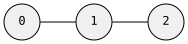
Triangle (back-reference)
// triangle: chain + n() closes the cycle
let g: Graph<(), edge::Undir<()>> = graph![
N(0) ^ (N(1) ^ (N(2) ^ n(0)))
].unwrap();
Star (flat chaining)
// star: flat chaining fans out from one node
let g: Graph<(), edge::Undir<()>> = graph![
N(0) ^ N(1)
^ N(2)
^ N(3)
^ N(4)
].unwrap();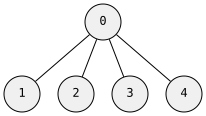
With Values
// node values
let g: Graph<&str, edge::Undir<()>> = graph![
N(0).val("alice") ^ (N(1).val("bob") ^ N(2).val("carol"))
].unwrap();
// edge values — & E().val(...) before direction operator
let g: Graph<(), edge::Undir<f64>> = graph![
N(0) & E().val(1.5) ^ (N(1) & E().val(2.0) ^ N(2))
].unwrap();
// both
let g: Graph<&str, edge::Undir<u32>> = graph![
N(0).val("a") & E().val(10) ^ N(1).val("b")
].unwrap();Anonymous Nodes
// ids assigned automatically
let g: Graph<(), edge::Undir<()>> = graph![N_() ^ N_() ^ N_()].unwrap();Directed Graphs
// path: 0 → 1 → 2
let g: Graph<(), edge::Dir<()>> = graph![
N(0) >> (N(1) >> N(2))
].unwrap();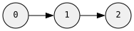
// fan-out: flat chaining from one node
let g: Graph<(), edge::Dir<()>> = graph![
N(0) >> N(1)
>> N(2)
>> N(3)
].unwrap();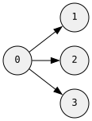
// bidirectional: n() references existing nodes
let g: Graph<(), edge::Dir<()>> = graph![
N(0) >> N(1),
n(1) >> n(0),
].unwrap();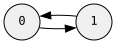
// incoming edges with <<
let g: Graph<(), edge::Dir<()>> = graph![
N(0) << N(1), // edge from 1 to 0
].unwrap();Anydirected Graphs
Mix undirected and directed edges in one graph:
let g: Graph<(), edge::Anydir<()>> = graph![
N(0) ^ (N(1) >> N(2)), // 0 — 1 → 2
N(3) << n(2), // 2 → 3
].unwrap();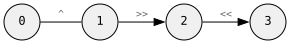
// all three edge types between one pair
let g: Graph<(), edge::Anydir<()>> = graph![
N(0) ^ N(1), // undirected
n(0) >> n(1), // directed 0 → 1
n(1) >> n(0), // directed 1 → 0
].unwrap();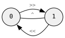
Turbofish Syntax
When the type can’t be inferred, use the turbofish form:
let g = graph![<(), grw::graph::edge::Undir<()>>; N(0) ^ N(1)].unwrap();Multiple Fragments
Use commas to separate disconnected components or back-references:
// two separate edges, then connect them
let g: Graph<(), edge::Undir<()>> = graph![
N(0) ^ N(1),
N(2) ^ N(3),
n(0) ^ n(2),
].unwrap();modify! — Mutation
modify! applies transactional changes to an existing graph — adding nodes, removing nodes, adding/removing edges, and swapping values — all atomically. It returns a Modification describing everything that changed.
DSL Primitives
| Symbol | Meaning |
|---|---|
N(id) | New node (local id for back-references within this modification) |
N_() | New node (auto-assigned local id) |
n(id) | Reference to new node defined earlier in same modify! |
X(id) | Existing graph node (by graph node id) |
x(id) | Reference to existing graph node (no value change) |
!X(id) | Remove existing node (and all its edges) |
E() | New edge constructor |
e() | Existing edge reference (for value swap) |
!e() | Remove existing edge |
.val(v) | Set value on node or edge |
Adding Nodes and Edges
use grw::graph::{self, Graph, edge};
let mut g: Graph<(), edge::Undir<()>> = Graph::default();
// add two connected nodes
modify!(g, [N(1) ^ N(2)]).unwrap();
assert_eq!(g.node_count(), 2);
assert_eq!(g.edge_count(), 1);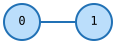
// connect new node to existing
modify!(g, [X(0) ^ N(3)]).unwrap();
assert_eq!(g.node_count(), 3);
assert_eq!(g.edge_count(), 2);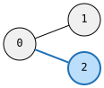
let mut g: Graph<(), edge::Dir<()>> = Graph::default();
// directed path
modify!(g, [N(1) >> (N(2) >> N(3))]).unwrap();
assert_eq!(g.node_count(), 3);
assert_eq!(g.edge_count(), 2);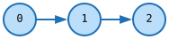
let mut g: Graph<(), edge::Undir<()>> = Graph::default();
// triangle via back-reference
modify!(g, [N(1) ^ (N(2) ^ (N(3) ^ n(1)))]).unwrap();
assert_eq!(g.node_count(), 3);
assert_eq!(g.edge_count(), 3);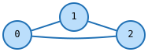
With Values
let mut g: Graph<&str, edge::Undir<u32>> = Graph::default();
// node and edge values
modify!(g, [
N(1).val("a") & E().val(42u32) ^ N(2).val("b")
]).unwrap();
assert_eq!(g.node_count(), 2);
assert_eq!(g.edge_count(), 1);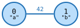
// isolated node
modify!(g, [N(3).val("c")]).unwrap();
assert_eq!(g.node_count(), 3);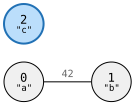
Removing Nodes and Edges
let mut g: Graph<(), edge::Undir<()>> = Graph::default();
modify!(g, [N(1) ^ N(2) ^ N(3)]).unwrap();
// remove node 1 (and its edges)
modify!(g, [!X(1)]).unwrap();
assert_eq!(g.node_count(), 2);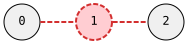
let mut g: Graph<(), edge::Dir<()>> = Graph::default();
modify!(g, [N(1) >> N(2)]).unwrap();
// remove edge, keep both nodes
modify!(g, [X(0) & !e() >> x(1)]).unwrap();
assert_eq!(g.node_count(), 2);
assert_eq!(g.edge_count(), 0);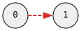
Updating Values
let mut g: Graph<&str, edge::Undir<()>> = Graph::default();
modify!(g, [N(1).val("old")]).unwrap();
assert_eq!(g.get(0), Some(&"old"));
// swap node value
modify!(g, [X(0).val("new")]).unwrap();
assert_eq!(g.get(0), Some(&"new"));let mut g: Graph<(), edge::Undir<u32>> = Graph::default();
modify!(g, [N(1) & E().val(100u32) ^ N(2)]).unwrap();
// swap edge value
modify!(g, [X(0) & e().val(200u32) ^ X(1)]).unwrap();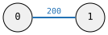
Modification Result
The returned Modification struct contains:
new_node_ids— mapping from local ids to real graph idsadded_edges— edges that were createdremoved_nodes/removed_edges— what was deletedswapped_node_vals/swapped_edge_vals— old values that were replaced
let mut g: Graph<(), edge::Undir<()>> = Graph::default();
let result = modify!(g, [N(1) ^ N(2)]).unwrap();
// the local id 1 was assigned a real graph node id
let real_id = result.new_node_ids[&LocalId(1)];Color Legend for Diagrams
Throughout this documentation:
- Blue — added or changed elements
- Red dashed — removed elements
- Black — existing, unchanged elements
search! — Pattern Matching
search! compiles a pattern into a query and iterates over all morphism-valid mappings from pattern nodes to target graph nodes. Patterns are organized into clusters — get (required) and ban (forbidden substructures).
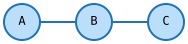
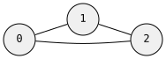
DSL Primitives
| Symbol | Meaning |
|---|---|
get(morphism) { ... } | Required pattern cluster — must be found |
ban(morphism) { ... } | Forbidden pattern cluster — matches are rejected |
N(id) | Pattern node |
n(id) | Reference to pattern node |
^ >> << | Edge operators (same as graph!) |
!N(id) | Negated node — the edge must NOT exist |
N(id).val(v) | Node value — exact match |
N(id).test(|v| ...) | Node value predicate |
E().val(v) | Edge value — exact match |
X(id) | Context node — pinned to a specific graph node |
Basic Usage
When search! receives a graph reference, it creates a Session that you iterate with a for loop:
use grw::*;
use grw::graph::edge;
// target graph: triangle
let g: graph::Undir0 = graph![
N(0) ^ (N(1) ^ (N(2) ^ n(0)))
].unwrap();
// search for edges
let session = search![&g,
get(Mono) {
N(0) ^ N(1)
}
].unwrap();
for m in &session {
let a = m.get(0).unwrap();
let b = m.get(1).unwrap();
println!("{:?} — {:?}", a, b);
}The Match Struct
Each iteration yields a Match — a mapping from pattern node local ids to graph node ids.
for m in &session {
// get a specific pattern node's graph mapping
let node_id: id::N = m.get(0).unwrap();
// iterate all (pattern_local_id, graph_node_id) pairs
for &(lid, nid) in m.iter() {
println!("pattern {} → graph {:?}", lid.0, nid);
}
// just the graph node ids
let graph_nodes: Vec<id::N> = m.values().collect();
}TranslatedMatch
For richer access to node values and adjacencies, use translate():
for m in &session {
let tm = session.translate(&m);
// node with its value
if let Some((nid, val)) = tm.node(0) {
println!("pattern 0 → graph {:?} val={:?}", nid, val);
}
// all matched nodes with values
for (lid, nid, val) in tm.nodes() {
println!("{} → {:?} = {:?}", lid.0, nid, val);
}
}Ban Clusters
Ban clusters define forbidden substructures. If the ban pattern matches, the overall match is rejected.
// find edges whose endpoints do NOT share a common neighbor
let session = search![&g,
get(Mono) {
N(0) ^ N(1)
},
ban(Mono) {
n(0) ^ N(2),
n(1) ^ n(2),
}
].unwrap();The n(0) and n(1) in the ban cluster refer back to the nodes defined in the get cluster. The ban says: “reject this match if nodes 0 and 1 share a common neighbor (node 2).”
Sequential vs Parallel
The Session supports two iteration modes:
// sequential — lazy iterator, one match at a time
for m in session.iter() { /* ... */ }
// also works via IntoIterator
for m in &session { /* ... */ }
// parallel — uses rayon, collects all matches
let all: Vec<Match> = session.par_iter().collect();session.iter() is single-threaded lazy backtracking — yields one match at a time. Use this when you want to process matches as a stream or stop early.
session.par_iter() partitions the search space across threads via rayon. Use this for large graphs where you need all matches and have cores to spare.
Value Predicates
Filter matches based on node or edge values:
// find nodes where x > 10.0
let session = search![&g,
get(Mono) {
N(0).test(|p: &Point| p.x > 10.0) ^ N(1)
}
].unwrap();Context Nodes
Pin a pattern node to a specific graph node:
// find all neighbors of graph node 5
let session = search![&g,
get(Mono) {
X(5) ^ N(0)
}
].unwrap();X(5) is pinned to graph node 5 — the search only looks for nodes connected to it.
Variable-Length Paths
Prefix a pattern node with .. and the edge becomes a variable-length
path. Everything else about the pattern stays the same — a path drops in
anywhere an edge can.
..n(1).dfs() // deepest-first trails
..n(1).bfs().len(3..10) // shortest-first, 3–9 edges
..n(1).navigate(Dijkstra::counted()) // cheapest by hop count
..n(1).navigate(Dijkstra::weighted(|ev: &EV| ev.cost)) // cheapest by edge weight
..n(1).navigate(AStar::new(|ev| ev.cost, |n| h(n))).all() // every trail, cost-ordered
..n(1).dfs().guard(|p| !p.contains(N(2))) // prune paths mid-walk
..n(1).drive(|n| Some(Explore::One(0))) // steer expansion per depthTraversal: dfs / bfs / drive
dfs() yields deepest trails first, bfs() shortest first. Both are lazy
— each next() computes exactly one complete path by backtracking.
drive(f) steers a DFS: at each expansion step, the closure receives the
number of candidate continuations n and answers with an
Explore decision — or None to prune the tip.
Length bounds: len
.len(bounds) constrains the number of edges in the path. Any usize
range works, and a bare usize means an exact length:
.len(3) // exactly 3 edges
.len(2..5) // 2, 3 or 4
.len(2..=4) // same, inclusive
.len(1..) // at least one (the default)
.len(0..) // include the trivial self-path when from == toNavigation: Dijkstra / AStar
navigate(nav) orders results by cost instead of traversal order. The
navigator supplies a non-negative per-edge cost; A* adds an admissible
per-node heuristic that steers exploration without changing which path is
cheapest.
let cfg = Config::new(())
.navigate(Dijkstra::weighted(|ms: &u32| *ms as f64));
let (cost, path) = g
.path_navigate(N(0), N(3), outgoing, cfg, &constraint)
.next()
.unwrap();Two result modes:
| Mode | Meaning |
|---|---|
.one() (default) | The single cheapest path. Textbook Dijkstra/A* node dominance — O((V+E) log V). |
.all() | Every trail, in non-decreasing cost. No dominance; the frontier can grow — you decide when to stop pulling. |
Guards
.guard(pred) rejects paths (including partial ones) during the walk. The
predicate receives the path tip-first as a lazy, allocation-free view —
decide from a short suffix and return early:
.dfs().guard(|p| !p.contains(id::N(2)))Steering with Explore
The drive closure picks which continuation indices 0..n to expand:
| Decision | Meaning |
|---|---|
Explore::All | expand every candidate |
Explore::One(i) | only the i-th |
Explore::Len(l) | the first min(l, n) |
Explore::Steps(s) | exactly the listed indices |
None | prune this tip |
Paths inside search!
Inside a pattern, the path’s endpoints are pattern nodes and the morphism
governs the intermediates: a Mono path can’t reuse nodes bound
elsewhere in the match, a SubIso path additionally rejects branched
intermediates. Bind both endpoints to the same node and paths become
cycle detection:
let session = search![&g,
get(Homo) { N(0), N(1) }, // endpoints may collapse
get(Mono) { n(0) >> ..n(1).dfs().len(1..) }
].unwrap();
let cycles = session.iter()
.filter(|m| m[0] == m[1] && !m.path(0).is_empty())
.count();Consuming path results
One Match fixes the endpoints — but several concrete paths may realize the
same binding. They hang off the match, per path edge:
m.path(0) // &[id::N] — full node sequence of the first path edge
m.path_count(0) // how many alternatives were found
m.next_paths() // step to the next combination (odometer, rightmost first)next_paths_injective() additionally keeps intermediates across different
path edges mutually distinct — that is how Mono/SubIso semantics extend
to multi-path matches.
Standalone iterators are plain: g.path_search(..) yields Vec<id::N> per
next(), g.path_navigate(..) yields (cost, Vec<id::N>) in non-decreasing
cost order.
Morphisms
A morphism is a mapping from pattern nodes to target nodes that preserves edges — if two nodes are connected in the pattern, their mapped counterparts must be connected in the target.
The question is: how strict is the mapping? Three independent axes control this.
The Three Axes
Injective (one-to-one)
No two pattern nodes map to the same target node. Each match “uses up” a target node.
Real-world: assigning people to desks — each desk holds one person.
Surjective (covers everything)
Every target node must be hit by at least one pattern node. No target node left unmapped.
Real-world: every desk must have someone sitting at it.
Induced (exact neighborhood)
No extra edges allowed between matched nodes beyond what the pattern specifies. The pattern describes the exact local structure.
Real-world: the people at these desks talk to exactly who the org chart says — no side conversations.
The Six Morphisms
| Morphism | Injective | Surjective | Induced | Plain English |
|---|---|---|---|---|
| Iso | yes | yes | yes | Exact match — same shape, same size, same edges |
| SubIso | yes | no | yes | Find this exact shape inside the target |
| EpiMono | yes | yes | no | Bijection, but extra edges between matched nodes OK |
| Mono | yes | no | no | Each pattern node gets a unique target node, extra edges OK |
| Epi | no | yes | no | Must cover all target nodes, can collapse pattern nodes |
| Homo | no | no | no | Anything goes — just preserve edges |
The Lattice
These form a partial order. Going up adds constraints, going down relaxes them.
Iso
/ \
SubIso EpiMono
\ / \ /
Mono Epi
\ /
Homo
- Up = more constrained, down = more relaxed
SubIso= Mono + inducedEpiMono= Mono + surjectiveIso= SubIso + surjective = EpiMono + induced
The meet() of two morphisms is the most relaxed morphism that satisfies both. This is used internally when multiple clusters share nodes.
When to Use What
Isomorphism — “Are these two graphs identical?” Graph comparison, canonical forms, symmetry detection. Both graphs must have the same number of nodes, same edges, nothing extra.
Subgraph Isomorphism — “Does this shape appear inside that graph?” The workhorse of pattern matching. Find a triangle in a social network, a motif in a protein structure, a substructure in a molecule. The matched region must look exactly like the pattern — no extra connections between matched nodes.
Monomorphism — “Can I embed this pattern without node conflicts?” Like SubIso but relaxed: extra edges between matched nodes are allowed. Good when you care about required connections but don’t mind if the matched nodes have additional relationships. Often easier to compute.
Epimorphism — “Does the pattern cover the entire target?” Every target node must be matched. Useful for coverage analysis, tiling, or ensuring nothing is left unmatched. Pattern can collapse multiple nodes onto one target.
EpiMono — “Is this a relabeling with possible extra edges?” Bijective but non-induced. Same number of nodes, one-to-one mapping, but the target may have edges the pattern doesn’t mention. Arises naturally when a node participates in both Mono and Epi constraints.
Homomorphism — “Can this pattern be projected onto that graph?” Most relaxed. Multiple pattern nodes can collapse to one target node. Graph coloring is a homomorphism to a complete graph. Useful for abstract structural queries where you care about connectivity patterns, not exact node identity.
Index Tiers
Before the search engine can match patterns, it needs a data structure for fast neighbor lookups. When you use search![&g, ...], the graph is indexed automatically with RevCsr. For manual control, you can index explicitly.
Tiers
| Tier | What it builds | Memory | Speed | When to use |
|---|---|---|---|---|
Raw | Sorted node id list | Minimal | Baseline | Tiny graphs, memory constrained |
Rev | Reverse adjacency map | Low | Good | Small graphs |
RevCsr | CSR-compressed reverse adjacency | Medium | Fast | Default choice — good balance |
RevCsrVal | CSR + cached edge values | Higher | Fastest for valued | Graphs with edge predicates |
Automatic Indexing
The search! macro with a graph reference handles indexing for you:
// RevCsr index is built automatically
let session = search![&g,
get(Mono) { N(0) ^ N(1) }
].unwrap();Manual Indexing
For repeated searches on the same graph, index once and reuse:
use grw::search::{Search, Seq, Par, RevCsr, RevCsrVal};
let Search::Resolved(r) = search![<(), edge::Undir<()>>;
get(Mono) { N(0) ^ N(1) }
].unwrap() else { panic!() };
// index once
let indexed = g.index(RevCsr);
// search many times
let count1 = Seq::search(&r.query, &indexed).count();
let count2 = Seq::search(&r.query, &indexed).count();RevCsrVal for Edge Predicates
When your search pattern uses edge value predicates, RevCsrVal pre-caches edge values in the CSR structure for faster lookups:
let indexed = g.index(RevCsrVal);This trades more memory for faster edge predicate evaluation during search.
Persistence
GRW graphs can be saved to and loaded from binary files with layout validation.
Save and Load
use std::path::Path;
// save
g.save(Path::new("my_graph.grw")).unwrap();
// load
let g2: graph::Undir0 = Graph::load(Path::new("my_graph.grw")).unwrap();Binary Format
The .grw file format (version 2) consists of:
- Magic bytes —
GRW\0 - Version —
u16(currently 2) - Edge kind —
u8(0=undir, 1=dir, 2=anydir) - Node/edge counts —
u64each - Layout hashes —
u64for NV and EV types - Type name strings — for error messages
- Bincode-serialized graph data
Layout Validation
When loading, GRW validates that the types match:
- Edge kind must match (can’t load a directed graph as undirected)
- Layout hash for node values must match
- Layout hash for edge values must match
// this will fail: type mismatch
let result = Graph::<i64, edge::Undir<i64>>::load(Path::new("u32_graph.grw"));
// Error: "node value layout mismatch: file has type `u32`, expected `i64`"The layout hash is computed from the type’s field names, types, and structure using FNV hashing. This catches:
- Wrong types (
u32vsi64) - Reordered fields
- Added/removed fields
Memory-Mapped Loading
load() uses memmap2 for memory-mapped file access. The file header is parsed first, then bincode deserializes directly from the mmap.
The Val Trait
save() and load() require both NV and EV to implement the Val trait (for layout hash computation). Primitive types ((), bool, u8–u64, i8–i64, f32, f64, String) implement Val automatically. For custom structs, use #[derive(Val)]:
use grw::Val;
#[derive(Val, serde::Serialize, serde::Deserialize)]
struct MyNode {
x: f64,
y: f64,
label: String,
}Watcher
The Watcher trait provides an observer pattern for graph mutations and search events. Implement it to receive callbacks when the graph changes or when the search engine makes decisions.
The Watcher Trait
pub trait Watcher<NV, E: Edge> {
const ACTIVE: bool = true;
// Search events
fn on_bind(&mut self, step: usize, pattern_node: LocalId, graph_node: id::N) -> Control;
fn on_unbind(&mut self, step: usize, pattern_node: LocalId);
fn on_edge_test(&mut self, ...) -> Control;
fn on_ban_verdict(&mut self, cluster: usize, verdict: BanVerdict) -> Control;
fn on_match(&mut self, mapping: &[(LocalId, id::N)]) -> Control;
// Mutation events
fn on_node_added(&mut self, id: id::N, val: &NV);
fn on_node_removed(&mut self, id: id::N);
fn on_node_changed(&mut self, id: id::N, val: &NV);
fn on_edge_added(&mut self, id: id::E, n1: id::N, n2: id::N, slot: &E::Slot, val: &E::Val);
fn on_edge_removed(&mut self, id: id::E);
fn on_edge_changed(&mut self, id: id::E, val: &E::Val);
}Control Flow
Watcher callbacks return Control:
Control::Continue— keep goingControl::Pause— pause (for interactive debugging)Control::Stop— abort the search
Silent Watcher
Silent is a no-op implementation with ACTIVE: bool = false. The compiler optimizes all callbacks away when Silent is used:
use grw::watch::Silent;
// Silent is used by default — zero overheadWatchedGraph
To observe mutations, wrap the graph with a watcher:
let mut watcher = MyWatcher::new();
let mut watched = g.watched(&mut watcher);
// mutations through watched notify the watcher
watched.modify(ops).unwrap();
// watcher received on_node_added, on_edge_added, etc.Ban Verdicts
During search, ban clusters report their outcomes:
BanVerdict::Fired— the ban pattern matched, rejecting the candidateBanVerdict::SharedEdgeFail— shared edge check eliminated the candidateBanVerdict::NoCandidate— no valid mapping for the ban pattern
Morphism Cheat Sheet
Visual Examples
Pattern: path A — B — C (3 nodes, 2 edges). Target: triangle 0 — 1 — 2 — 0 (3 nodes, 3 edges).
Mapping: A→0, B→1, C→2
The required edges (A—B, B—C) are present in the target. But there’s an extra edge 0—2 that the pattern doesn’t mention.
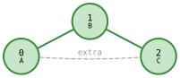
Mono: accept — extra edge is fine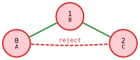
SubIso: reject — extra edge violates induced constraint| Morphism | Verdict | Why |
|---|---|---|
| Iso | reject | extra edge 0—2 not in pattern (induced violation) |
| SubIso | reject | same — induced: extra edge 0—2 |
| EpiMono | accept | bijective, edges preserved, extra OK |
| Mono | accept | injective, edges preserved, extra OK |
| Epi | accept | surjective, edges preserved |
| Homo | accept | edges preserved, no other constraints |
Collapsing: A→0, B→1, C→1
C maps to the same target node as B — a collapse.
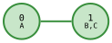
Homo: accept — collapse allowed| Morphism | Verdict | Why |
|---|---|---|
| Mono | reject | B and C map to same node (not injective) |
| Homo | accept | collapse allowed, edge A—B preserved |
Surjectivity: pattern A—B on target 0—1—2
A two-node pattern on a three-node target. Node 2 is left uncovered.
| Morphism | Verdict | Why |
|---|---|---|
| Epi | reject | node 2 not covered (surjectivity violated) |
| Mono | accept | uncovered nodes are fine |
Quick Decision Guide
Do I need each pattern node to match a different target node?
- Yes → injective (Iso, SubIso, EpiMono, Mono)
- No → non-injective (Epi, Homo)
Do I need every target node to be matched?
- Yes → surjective (Iso, EpiMono, Epi)
- No → non-surjective (SubIso, Mono, Homo)
Do I care about extra edges between matched nodes?
- Yes, reject them → induced (Iso, SubIso)
- No, allow them → non-induced (EpiMono, Mono, Epi, Homo)
Complexity
| Morphism | Complexity | Why |
|---|---|---|
| Iso | GI-complete | Own complexity class, believed sub-exponential |
| SubIso | NP-complete | Generalizes clique, Hamiltonian path |
| EpiMono | GI-complete | Bijection check + edge preservation |
| Mono | NP-complete | Generalizes clique |
| Epi | NP-complete | Surjectivity + edge preservation |
| Homo | NP-complete | Generalizes graph coloring |
In practice, real-world graphs have structure (bounded degree, sparsity, value predicates) that makes these tractable with backtracking and pruning. Small patterns on large graphs are fast.